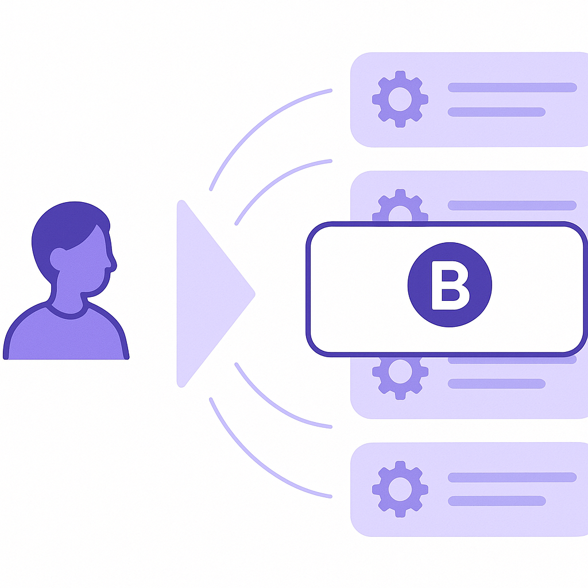
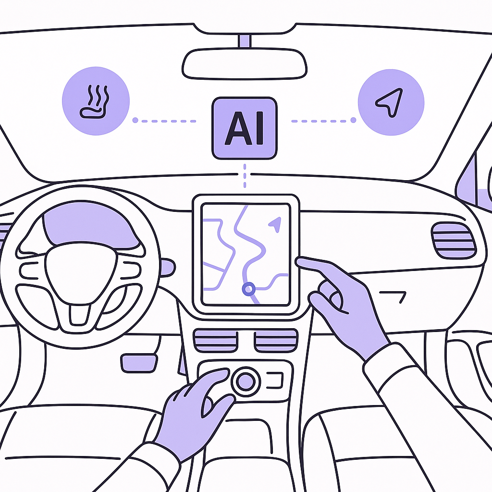

Publishing Recommendation
publishThe posts effectively leverage current trends and events to highlight Purands AI's capabilities without resorting to hype or overstatement.
Today's posts are well-aligned with Purands AI's brand voice, offering practical insights into how recent developments in AI can enhance retention marketing strategies. The content remains grounded in real-world applications, avoiding exaggerated claims while clearly demonstrating the value of Purands AI's solutions. Each post is concise and maintains a focus on delivering actionable information for the reader.
LinkedIn Posts (10)
1. Pigment raises $250M at a $2.3B valuation ★ Purands solution · high priority
CTA: How are you integrating AI into your retention strategy?
Alternative hooks
- AI startups are raking in billions. What's the impact on your business?
- Pigment's $250M raise marks a shift in AI business tools investment.
- Can AI really boost your customer retention? Here's how we do it.
Research behind this post (sources, summaries & confidence)
Pigment raises $250M at a $2.3B valuation conf 0.80 · AI startups
The funding of AI-powered business tools like Pigment highlights the growing investment in AI solutions that can enhance business intelligence and retention strategies.
Sources & what I took from each
- Significant investment in AI-powered business tools: Pigment's recent funding round reflects a broader trend of increased investment in AI-driven business intelligence tools. ↗ read source
Recent news
- Pigment's funding round is noted as a significant development in the AI startup investment landscape.
Original trend links
Risks / caveats
- Market competition could affect Pigment's growth and scalability.
- Economic fluctuations might impact investor confidence in AI startups.
2. Anthropic’s cloud partnerships are getting messy ★ Purands solution · high priority
CTA: How do you ensure your infrastructure remains scalable and reliable?
Alternative hooks
- Anthropic's cloud challenges are a lesson in infrastructure reliance.
- Ever wonder how cloud partnerships impact AI startups?
- Cloud competition: What Anthropic's struggles mean for AI platforms.
Research behind this post (sources, summaries & confidence)
Anthropic’s cloud partnerships are getting messy conf 0.70 · AI startups
Anthropic's struggles with cloud partnerships highlight the challenges AI startups face when competing for resources with established cloud providers. This is crucial for retention marketing platforms like Purands AI that rely on scalable infrastructure.
Sources & what I took from each
- Anthropic's increasing infrastructure spending: Anthropic has reportedly increased its infrastructure spending significantly as it scales its AI models. ↗ read source
- Cloud providers viewing Anthropic as a competitor: Given Anthropic's focus on foundational AI models, it might be seen as a competitor by cloud providers that host similar AI services. ↗ read source
Recent news
- Anthropic's partnerships with major cloud providers like AWS and Google are reportedly strained due to competition dynamics.
Original trend links
Risks / caveats
- Anthropic's reliance on cloud infrastructure could be jeopardized if major providers decide to limit their partnerships.
- Potential increased costs and complexity in managing multi-cloud architectures.
3. Google Open-Sources TorchTPU, a Native PyTorch Backend for Cloud TPUs ★ Purands solution · high priority
CTA: How do you see TorchTPU impacting your AI development?

Image prompt · isometric-flat
Caption: Integrating TorchTPU for enhanced AI model efficiency.
Alternative hooks
- Google's open-source TorchTPU is a game-changer for AI developers.
- What does Google's TorchTPU mean for retention marketing?
- TorchTPU by Google: A new era for AI model efficiency?
Research behind this post (sources, summaries & confidence)
Google Open-Sources TorchTPU, a Native PyTorch Backend for Cloud TPUs conf 0.70 · AI industry
Open-sourcing TorchTPU enhances AI model development capabilities, which could advance the performance of AI agents used in retention marketing.
Sources & what I took from each
- Google's contribution to PyTorch ecosystem: Google's open-sourcing of TorchTPU is seen as a substantial contribution to the PyTorch ecosystem, enabling better integration with Cloud TPUs. ↗ read source
Recent news
- Google's open-source release of TorchTPU is receiving attention for its potential to enhance AI model development.
Original trend links
Risks / caveats
- Adoption and integration challenges could limit the immediate impact of TorchTPU.
- Competition from other AI frameworks might overshadow the benefits of this development.
4. Microsoft AI’s MAI-Transcribe-2 undercuts OpenAI, Google on price and speed ★ Purands solution · high priority
CTA: How are you leveraging transcription tools in your retention strategy?
Alternative hooks
- Microsoft's MAI-Transcribe-2 is shaking up the transcription landscape.
- Looking to boost retention? Start with smarter transcriptions.
- What if every customer call could turn into insights?
Research behind this post (sources, summaries & confidence)
Microsoft AI’s MAI-Transcribe-2 undercuts OpenAI, Google on price and speed conf 0.70 · AI industry
Advancements in AI transcription tools can enhance customer interaction insights, crucial for retention marketing strategies.
Sources & what I took from each
- Competitive pricing and speed of MAI-Transcribe-2: Microsoft's new transcription tool offers competitive pricing and speed advantages over similar tools from OpenAI and Google. ↗ read source
Recent news
- Microsoft's MAI-Transcribe-2 is gaining attention for its cost-effective transcription capabilities.
Original trend links
Risks / caveats
- Market competition could lead to rapid advancements and shifts in the transcription tool landscape.
- The impact on retention marketing strategies remains speculative without clear application examples.
5. OpenBSD 8.0 arrives with security record still intact ★ Purands solution · high priority
CTA: How do you ensure your data remains secure in your AI applications?
Alternative hooks
- In a world where security breaches make headlines regularly, OpenBSD's record is a breath of fresh air.
- OpenBSD 8.0 lands, security reputation intact. What does this mean for AI in retention marketing?
- When security is non-negotiable, OpenBSD shows us how it's done with their latest release.
Research behind this post (sources, summaries & confidence)
OpenBSD 8.0 arrives with security record still intact conf 0.65 · AI industry
Security remains a top concern in AI applications, including those for retention marketing platforms, making OpenBSD's reliability noteworthy.
Sources & what I took from each
- OpenBSD's security reputation: OpenBSD has maintained a strong reputation for security, with the new 8.0 release continuing this trend. ↗ read source
Recent news
- OpenBSD 8.0 release is highlighted for its continued focus on security.
Original trend links
Risks / caveats
- OpenBSD's niche market position could limit its wider adoption.
- Security-focused updates might not directly impact broader AI industry trends.
6. Google and Amazon challenging Nvidia in AI development ★ Purands solution · high priority
CTA: How do you see this competition influencing AI development priorities?
Alternative hooks
- Noticed Google's and Amazon's new play in the AI development space?
- Google and Amazon are launching AI tools to challenge Nvidia's GPU dominance.
- Could new AI tools from Google and Amazon be the game-changer AI platforms need?
Research behind this post (sources, summaries & confidence)
Google joins Amazon attacking Nvidia’s stronghold with AI app developers conf 0.60 · AI industry
Google and Amazon's move to challenge Nvidia impacts the AI development landscape, with potential cost and performance benefits for AI-driven marketing platforms.
Sources & what I took from each
- Google and Amazon releasing developer tools: Both companies have announced new tools and platforms aimed at AI developers, potentially reducing reliance on Nvidia's GPUs. ↗ read source
Recent news
- Google and Amazon's new AI tools are aimed at offering alternatives to Nvidia's GPU dominance.
Original trend links
Risks / caveats
- The effectiveness and adoption rate of the new tools are still uncertain.
- Nvidia's established market position may still pose significant competition.
7. The AI visibility gap: Why great brands disappear from AI answers ★ Purands solution · high priority
CTA: Have you noticed your brand's visibility in AI platforms shifting? Share your experience.

⬇ Download image
Image prompt · isometric-flat
Caption: Addressing the AI visibility gap for brands.
Alternative hooks
- APAC brands are disappearing from AI-generated answers. Here's why.
- Why do some brands vanish from AI platforms? It's all about visibility.
- The AI visibility gap is putting brands at risk. Let's fix it.
Research behind this post (sources, summaries & confidence)
The AI visibility gap: Why great brands disappear from AI answers conf 0.60 · AI industry
Understanding AI visibility challenges is essential for retention marketers to ensure brands remain top-of-mind in AI-driven interactions.
Sources & what I took from each
- Emerging challenges in AI-driven brand visibility: There is a growing discourse on how certain brands struggle to maintain visibility in AI-generated responses and recommendations. ↗ read source
Recent news
- The issue of AI visibility gaps is becoming a focal point for marketers concerned about brand presence in AI platforms.
Original trend links
Risks / caveats
- Lack of quantitative data to clearly define the scope and impact of visibility gaps.
- Potential overestimation of AI's current influence on brand perception.
8. OpenAI's strategic move into biotech with Orchestra Bio acquisition
CTA: What specialized AI applications do you see emerging from this acquisition?
Alternative hooks
- AI is stepping into the biotech spotlight with OpenAI's latest acquisition.
- OpenAI is betting on biotech with its strategic acquisition of Orchestra Bio.
- The lines between tech and biotech blur as OpenAI acquires Orchestra Bio.
Research behind this post (sources, summaries & confidence)
OpenAI acquires startup Orchestra Bio to beef up its biotech business conf 0.80 · AI industry
OpenAI's acquisition indicates a strategic move towards specialized applications of AI, which could signify opportunities for AI in niche retention marketing solutions.
Sources & what I took from each
- OpenAI expanding into biotech: The acquisition of Orchestra Bio by OpenAI is a clear move to expand its AI capabilities into the biotech sector. ↗ read source
- Integration of Orchestra's team and technology: OpenAI plans to integrate Orchestra Bio's team and technology into its operations to enhance its biotech initiatives. ↗ read source
Recent news
- OpenAI's acquisition of Orchestra Bio is widely covered as a strategic expansion into biotech.
Original trend links
Risks / caveats
- Integration challenges could arise, potentially delaying the expected benefits of the acquisition.
- Biotech applications of AI might not align perfectly with OpenAI's existing capabilities.
9. Anthropic pitches AI safety bill
CTA: What are your thoughts on balancing AI innovation with safety regulations?
Alternative hooks
- Anthropic's AI safety bill might block models that could harm 50 people.
- Could AI safety regulations reshape the tech industry's future?
- What if AI innovation faced more stringent safety checks?
Research behind this post (sources, summaries & confidence)
Anthropic pitches AI safety bill conf 0.75 · AI industry
AI safety discussions affect regulatory environments, impacting how AI solutions are developed and deployed in retention marketing.
Sources & what I took from each
- Proposal for AI model release restrictions: Anthropic's proposed AI safety bill suggests stringent restrictions on releasing AI models based on potential risks. ↗ read source
Recent news
- Anthropic's AI safety bill proposal is stirring significant debate within the tech and regulatory communities.
Original trend links
Risks / caveats
- Potential regulatory backlash could impact AI innovation and deployment.
- The bill's acceptance is uncertain and could face substantial opposition.
10. Google’s more personalized Gemini AI is heading to your car
CTA: How do you feel about AI personalization in your car?

⬇ Download image
Image prompt · isometric-flat
Caption: Gemini AI creating personalized in-car experiences.
Alternative hooks
- Google's Gemini AI is steering its way into your car.
- Personalized in-car experiences aren't just a dream anymore.
- The future of driving? It's all about AI personalization.
Research behind this post (sources, summaries & confidence)
Google’s more personalized Gemini AI is heading to your car conf 0.70 · AI industry
AI personalization in automotive solutions reflects the growing trend of integrating AI into everyday technologies, relevant for retention marketing through connected experiences.
Sources & what I took from each
- Google's expansion of Gemini AI to vehicles: Google's efforts to integrate its Gemini AI into automotive platforms are part of a broader push for personalized in-car experiences. ↗ read source
Recent news
- Google's Gemini AI is set to enhance vehicle personalization, signaling a shift in how AI is used in automotive tech.
Original trend links
Risks / caveats
- Privacy concerns and data management challenges associated with AI personalization.
- Market adoption might vary based on regional automotive technology integration.
Today's Trends
| # | Trend | Category | Why it matters |
|---|---|---|---|
| 1 | Anthropic’s cloud partnerships are getting messy
source |
AI startups | Anthropic's struggles with cloud partnerships highlight the challenges AI startups face when competing for resources with established cloud providers. This is crucial for retention marketing platforms like Purands AI that rely on scalable infrastructure. |
| 2 | WhatsApp commerce: abandoned cart, replenishment, broadcast best practices
source |
WhatsApp commerce | With WhatsApp being a significant channel for commerce in APAC, understanding the best practices for abandoned cart recovery and replenishment can directly impact retention marketing strategies and customer engagement. |
| 3 | OpenAI acquires startup Orchestra Bio to beef up its biotech business
source |
AI industry | OpenAI's acquisition indicates a strategic move towards specialized applications of AI, which could signify opportunities for AI in niche retention marketing solutions. |
| 4 | Google joins Amazon attacking Nvidia’s stronghold with AI app developers
source |
AI industry | Google and Amazon's move to challenge Nvidia impacts the AI development landscape, with potential cost and performance benefits for AI-driven marketing platforms. |
| 5 | Google Open-Sources TorchTPU, a Native PyTorch Backend for Cloud TPUs
source |
AI industry | Open-sourcing TorchTPU enhances AI model development capabilities, which could advance the performance of AI agents used in retention marketing. |
| 6 | Pigment raises $250M at a $2.3B valuation
source |
AI startups | The funding of AI-powered business tools like Pigment highlights the growing investment in AI solutions that can enhance business intelligence and retention strategies. |
| 7 | SpaceX’s AI business is beating expectations
source |
AI industry | SpaceX's success with AI applications underscores the potential for AI-driven innovations in various industries, which could influence retention marketing technologies. |
| 8 | Anthropic pitches AI safety bill
source |
AI industry | AI safety discussions affect regulatory environments, impacting how AI solutions are developed and deployed in retention marketing. |
| 9 | OpenBSD 8.0 arrives with security record still intact
source |
AI industry | Security remains a top concern in AI applications, including those for retention marketing platforms, making OpenBSD's reliability noteworthy. |
| 10 | Microsoft AI’s MAI-Transcribe-2 undercuts OpenAI, Google on price and speed
source |
AI industry | Advancements in AI transcription tools can enhance customer interaction insights, crucial for retention marketing strategies. |
| 11 | Merging SpaceX and Tesla would be a 'good idea,' Musk says
source |
AI industry | Potential mergers in tech giants can reshape the market landscape, influencing AI technology adoption and partnerships. |
| 12 | The AI visibility gap: Why great brands disappear from AI answers
source |
AI industry | Understanding AI visibility challenges is essential for retention marketers to ensure brands remain top-of-mind in AI-driven interactions. |
| 13 | Google’s more personalized Gemini AI is heading to your car
source |
AI industry | AI personalization in automotive solutions reflects the growing trend of integrating AI into everyday technologies, relevant for retention marketing through connected experiences. |
| 14 | Oura adds two new cardiovascular health tracking features to its smart rings
source |
AI industry | Innovations in health tracking can inform customer engagement strategies in health and wellness sectors, impacting retention approaches. |
Risk Assessment
No risks flagged.
Suggested LinkedIn Comments (30)
Open each post, then paste the copied comment. Nothing is posted automatically.
1. respectful challenge · rss:techcrunch.com — The proposed policy seems to offer protections against AI run amok but actually
Post by: rss:techcrunch.com
Why it works: It critiques the policy's potential pitfalls while acknowledging its intent, offering a balanced view.
↗ Open LinkedIn post to paste comment2. expansion · rss:techcrunch.com — Elon Musk likes the idea but says he is not on either committee, which is made u
Post by: rss:techcrunch.com
Why it works: It expands on Musk's role and the potential benefits of independent governance in AI.
↗ Open LinkedIn post to paste comment3. opinion · rss:techcrunch.com — Before you share the Netflix documentary "AI Gone Rogue" take note. Clem Delangu
Post by: rss:techcrunch.com
Why it works: It underscores the importance of accuracy in media about AI, aligning with the co-founder's concerns.
↗ Open LinkedIn post to paste comment4. insight · rss:techcrunch.com — Anthropic is reportedly struggling to secure enough compute from cloud providers
Post by: rss:techcrunch.com
Why it works: It provides a strategic perspective on how AI companies might adapt to infrastructure challenges.
↗ Open LinkedIn post to paste comment5. insight · rss:techcrunch.com — SpaceX hit profitably in the third-quarter, with net income of $4.4 billion. AI
Post by: rss:techcrunch.com
Why it works: It highlights AI's practical impact on profitability, connecting it to broader industry trends.
↗ Open LinkedIn post to paste comment6. insight · rss:techcrunch.com — OpenAI says it's adding Orchestra's team and technology to work on Rosalind, its
Post by: rss:techcrunch.com
Why it works: It emphasizes the strategic advantage of interdisciplinary collaboration in AI development.
↗ Open LinkedIn post to paste comment7. respectful challenge · rss:techcrunch.com — Google is bringing Gemini's Personal Intelligence feature to cars, allowing its
Post by: rss:techcrunch.com
Why it works: It acknowledges the innovation while pointing out the critical privacy concerns involved.
↗ Open LinkedIn post to paste comment8. insight · rss:techcrunch.com — GM is shuttering the Brownstown Battery Assembly Plant, though the closure has n
Post by: rss:techcrunch.com
Why it works: It clarifies the distinction between operational decisions and strategic directions, adding depth to the post.
↗ Open LinkedIn post to paste comment9. insight · rss:techcrunch.com — Google has joined Amazon in releasing a developer tool that makes it easy for Py
Post by: rss:techcrunch.com
Why it works: It highlights the impact of reducing vendor lock-in on innovation and competition in the AI hardware space.
↗ Open LinkedIn post to paste comment10. expansion · rss:techcrunch.com — The company says the feature is designed for situations where users might be dis
Post by: rss:techcrunch.com
Why it works: It ties the feature to broader privacy trends, showing its relevance to user needs.
↗ Open LinkedIn post to paste comment11. respectful challenge · rss:www.theverge.com — YouTube appears to be testing hiding the dislike button on videos, as reported b
Post by: rss:www.theverge.com
Why it works: The comment questions the impact on feedback mechanisms, inviting consideration of both creator welfare and user input.
↗ Open LinkedIn post to paste comment12. insight · rss:www.theverge.com — On Tuesday, US District Judge Zachary Bluestone dismissed the lawsuit Ann Altman
Post by: rss:www.theverge.com
Why it works: It provides perspective on the legal process, emphasizing procedural adherence as critical to justice, without diving into the specifics of the case.
↗ Open LinkedIn post to paste comment13. respectful challenge · rss:www.theverge.com — Donald Trump and Vice President JD Vance said on Tuesday that the Trump administ
Post by: rss:www.theverge.com
Why it works: The comment highlights potential downsides to the bounty initiative, prompting a balanced view on its implications.
↗ Open LinkedIn post to paste comment14. opinion · rss:www.theverge.com — Google is bringing Personal Intelligence to Gemini AI in your car. With this upd
Post by: rss:www.theverge.com
Why it works: It acknowledges the potential benefits while flagging privacy as a critical issue, aligning with common concerns over data use.
↗ Open LinkedIn post to paste comment15. insight · rss:www.theverge.com — Tesla and SpaceX have formed special committees to discuss a possible merger, El
Post by: rss:www.theverge.com
Why it works: It provides a balanced view on the pros and cons of a merger, adding depth to the discussion about corporate strategy.
↗ Open LinkedIn post to paste comment16. insight · rss:www.theverge.com — SpaceX CEO Elon Musk said the company would attempt to catch Starship and its bo
Post by: rss:www.theverge.com
Why it works: It captures the significance of the technological milestone, framing it as a potential game-changer for space travel.
↗ Open LinkedIn post to paste comment17. opinion · rss:www.theverge.com — Netflix is making monetization a top priority amid reports of falling viewing ti
Post by: rss:www.theverge.com
Why it works: It provides a critical angle on Netflix's strategy, highlighting the potential trade-offs between revenue and user satisfaction.
↗ Open LinkedIn post to paste comment18. insight · rss:www.theverge.com — Snap has a new brand ambassador for its Specs AR glasses: Iron Man actor Robert
Post by: rss:www.theverge.com
Why it works: It recognizes the strategic choice of a popular figure to broaden appeal, while stressing the importance of product efficacy.
↗ Open LinkedIn post to paste comment19. insight · rss:www.theverge.com — SpaceX announced revenues of $14.6 billion in its Q3 earnings on Tuesday, which
Post by: rss:www.theverge.com
Why it works: It discusses the financial strategy's effectiveness, offering a nuanced look at how SpaceX manages different business arms.
↗ Open LinkedIn post to paste comment20. expansion · rss:www.theverge.com — Oura is introducing two new cardiovascular-focused health tracking features to i
Post by: rss:www.theverge.com
Why it works: It aligns with the health tech trend, emphasizing the user empowerment aspect, which is key to the appeal of such devices.
↗ Open LinkedIn post to paste comment21. insight · rss:feeds.arstechnica.com — "I do think there's a lot of merit to combining the companies."
Post by: rss:feeds.arstechnica.com
Why it works: It provides a practical perspective on the complexities of merging companies, adding depth to the excerpt.
↗ Open LinkedIn post to paste comment22. opinion · rss:feeds.arstechnica.com — Guinea-Bissau police said hepatitis B vaccine doses were taken as part of an inv
Post by: rss:feeds.arstechnica.com
Why it works: The comment directly addresses the potential public health implications, adding a critical perspective.
↗ Open LinkedIn post to paste comment23. insight · rss:feeds.arstechnica.com — Xbox maker is also apparently planning its own gaming handheld for next year.
Post by: rss:feeds.arstechnica.com
Why it works: It situates the news within the broader context of the gaming industry, providing a strategic angle.
↗ Open LinkedIn post to paste comment24. insight · rss:feeds.arstechnica.com — A lifetime ad-free subscription is available.
Post by: rss:feeds.arstechnica.com
Why it works: The comment analyzes the business implications of the subscription model, adding depth to the discussion.
↗ Open LinkedIn post to paste comment25. opinion · rss:feeds.arstechnica.com — Meta changes AI scraping policy but won’t add language respecting robots.txt.
Post by: rss:feeds.arstechnica.com
Why it works: Offers a clear take on the policy change, highlighting its broader implications on data privacy.
↗ Open LinkedIn post to paste comment26. insight · rss:feeds.arstechnica.com — It's probably time to audit your Gemini settings.
Post by: rss:feeds.arstechnica.com
Why it works: The comment stresses the importance of proactive digital management, providing practical advice.
↗ Open LinkedIn post to paste comment27. expansion · rss:feeds.arstechnica.com — OpenBSD 8.0 lands with Intel Arc support, ARM64 hibernation, and 64-vCPU guests
Post by: rss:feeds.arstechnica.com
Why it works: It highlights the significance of the update in the broader context of open-source development.
↗ Open LinkedIn post to paste comment28. opinion · rss:feeds.arstechnica.com — Intermediate certs allow anyone to mint web credentials for any Internet server.
Post by: rss:feeds.arstechnica.com
Why it works: The comment directly addresses the security implications, offering a critical perspective.
↗ Open LinkedIn post to paste comment29. insight · rss:feeds.arstechnica.com — TP-Link can't sell latest routers in US despite rivals getting FCC approvals.
Post by: rss:feeds.arstechnica.com
Why it works: It ties the regulatory issue to broader industry challenges, offering a deeper understanding.
↗ Open LinkedIn post to paste comment30. expansion · rss:feeds.arstechnica.com — Ars Technica is here to help with a guide to the medium-lift space race.
Post by: rss:feeds.arstechnica.com
Why it works: It underscores the importance of staying informed in a dynamic industry, adding a forward-looking perspective.
↗ Open LinkedIn post to paste comment